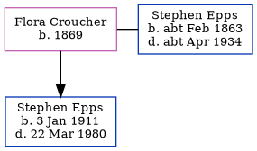

Flora Annie Epps (née Croucher) 1869 -
[ Home ] | [ Calendar ] | [ Surnames Index ] | [ Errors ] | [ Family History ]Flora Croucher, the wife of Stephen Epps (the first cousin three-times-removed on the father's side of Nigel Horne), was born in Crundale, Kent, England in 18691,2,3 and married Stephen (a tractor engine driver with whom she had 1 child, Stephen Thomas) in Bridge, Kent, England around Nov 19004.
During her life, she was living at Marlowe Terrace, Thanington, Kent on 31 Mar 19011 and on 2 Apr 19112; and at Wincheap Street, Canterbury, Kent on 19 Jun 19213.
Children
- Stephen Thomas was born on 3 Jan 1911
Citations
- 1901 England, Wales & Scotland Census - Findmypast (was age 32 and the wife of the head of the household)
- 1911 Census for England & Wales - Findmypast (was age 42 and the wife of the head of the household)
- 1921 Census Of England & Wales - Findmypast (was age 52 and the wife of the head of the household)
- England & Wales Marriages 1837-2005 - Findmypast
Family Tree
Map
Generated by ged2site. Last updated on Jul 3, 2024